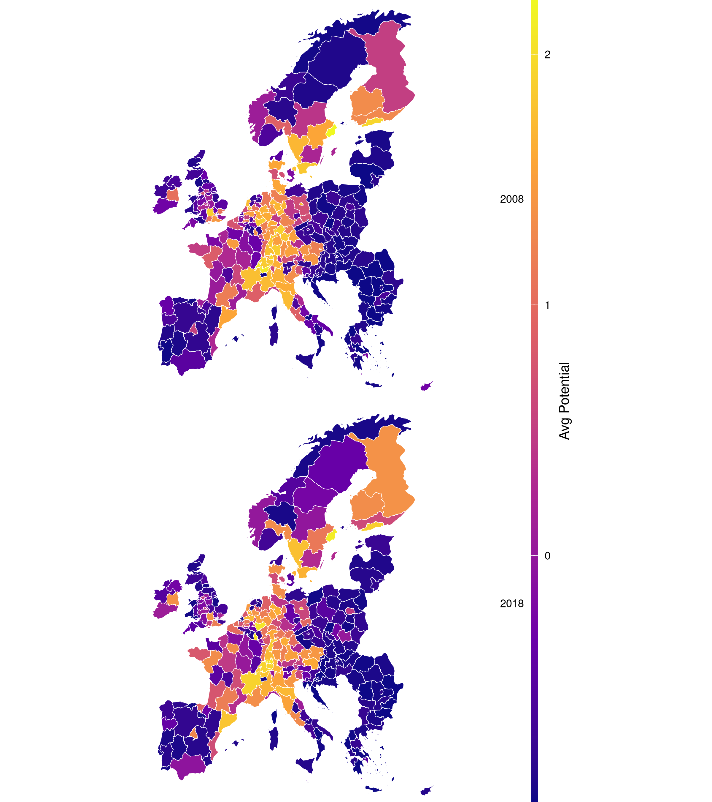
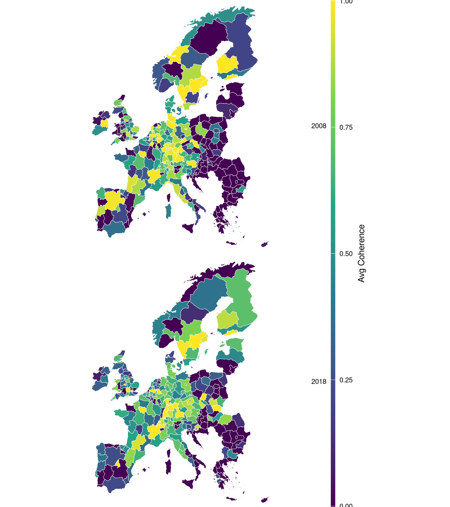
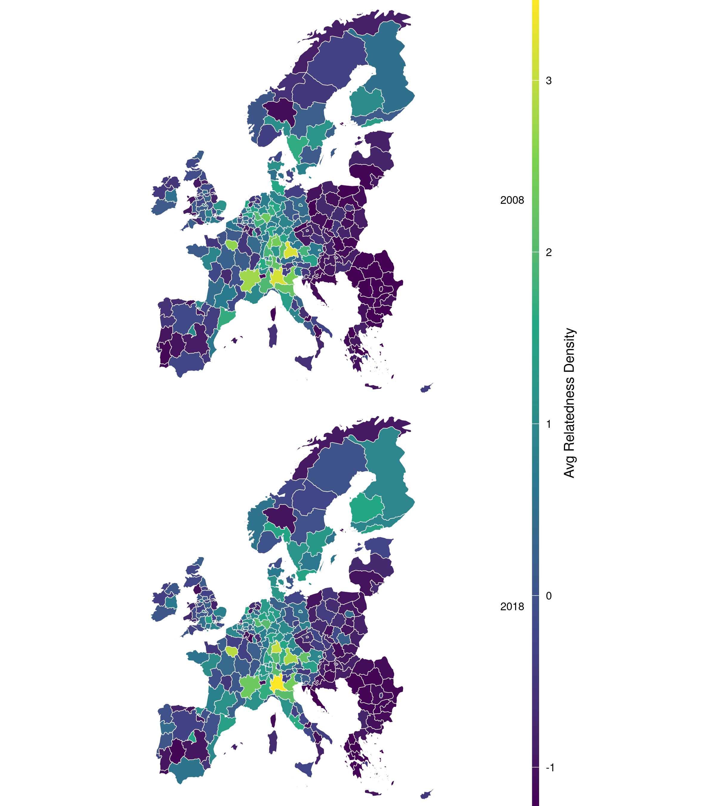
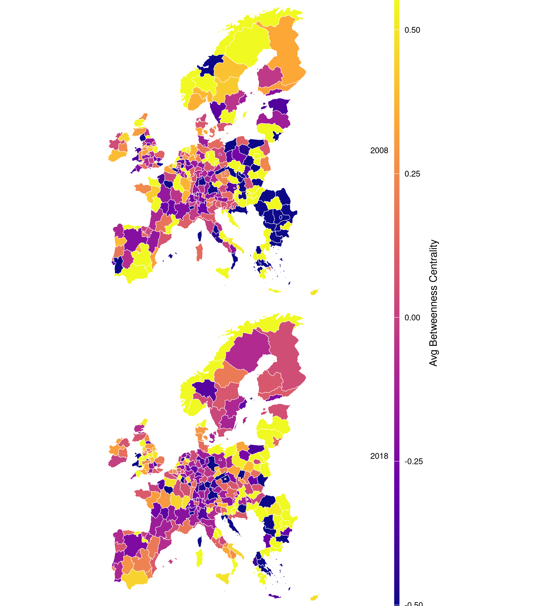
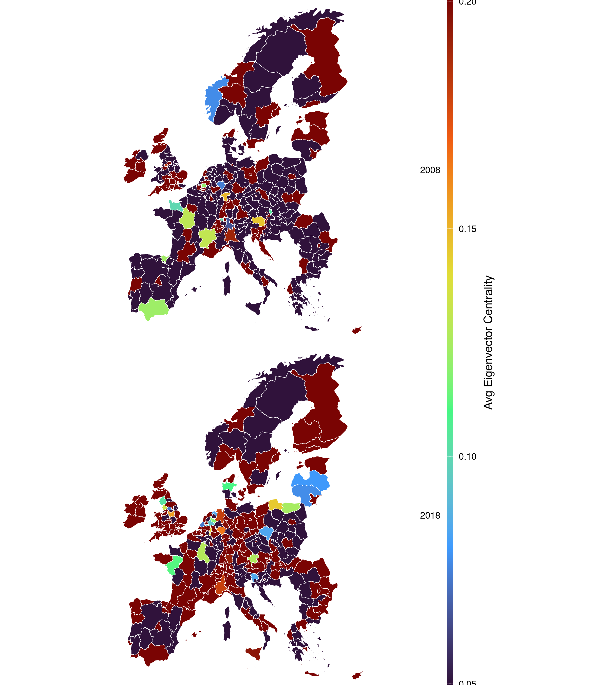
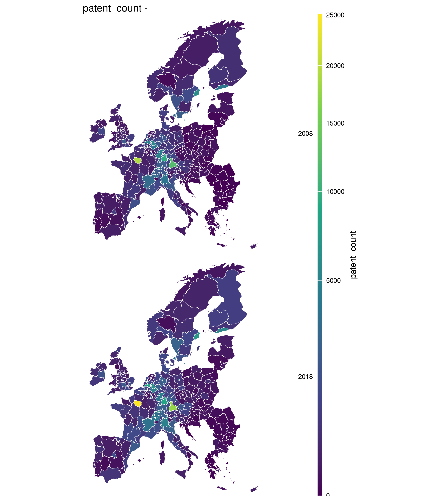
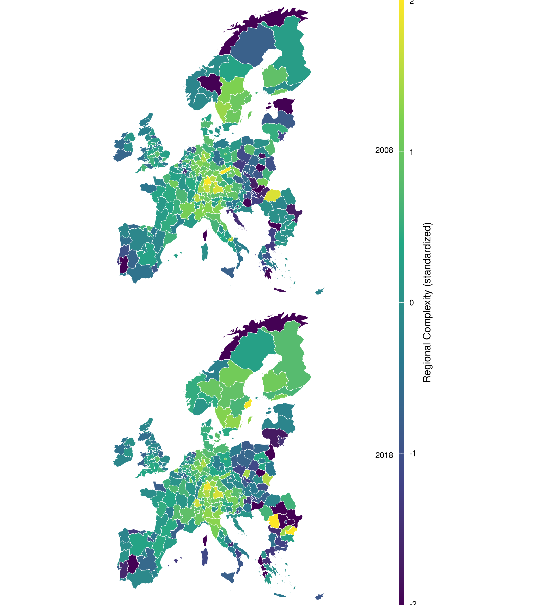

| Hypothesis | Claim | Key variables | Model |
|---|---|---|---|
| H1 | Potential is at least as informative as relatedness density in predicting entry | pred11 vs relatedness_density | Model 0 |
| H2a | Technologies with a bridging role are positively associated with potential | betweenness | Model 1 |
| H2b | Technologies with an enabling role are negatively associated with potential | eigenvector | Model 1 |
| H3a | Coherence positively predicts potential | coherence | Model 1 |
| H3b | Bridging technologies are more beneficial for low-coherence regions | betweenness x coherence | Model 1 |
| H3c | The enabling technology penalty is smaller for high-coherence regions | eigenvector x coherence | Model 1 |
| H4 | National ecosystem characteristics shape potential beyond portfolio mechanisms | GEI pillars x8-x14 | Model 2 |
| H5a | Regional potential is spatially interdependent across neighbouring regions | Spatial lag (SAR) | Model 3 |
| H5b | Bridging portfolio concentration predicts higher potential under sufficient coherence | avg_betweenness x avg_coherence | Model 3 |
| H5c | Enabling portfolio concentration is positively associated with potential | avg_eigenvector x avg_coherence | Model 3 |
| Note: Model 0 is the entry benchmark (LPM). Models 1 and 2 are dyadic fixed effects and hierarchical random effects respectively. Model 3 is the spatial autoregressive (SAR) panel estimated on region-year aggregates. | |||
5 Empirical Design
In the preceding chapters we discussed in more details the need for contextualised understanding of regional diversifiaction and we argued that such extra context should account both enodgenous and exogenous factors. Analogous to the research agenda in the EEG literature we highlighted that this contextualisation is mainly dependent of three channels: relatedness, network structures, and institutions.
In the previous chapter we went a step further and explained why we actually need to go beyond the classical proximity and relatedness paradigm since relatedness and network structure are almost identical constructs. The idea stems from their conceptual and methodological limitations which we summarised in three points: (1) symmetric co-occurrence measures obscure directional technological dependencies, (2) linear aggregation of relatedness density discards combinatorial information about how capabilities interact, and (3) co-occurrence measures yield noisy proximity metric because what’s measured almost always have higher dimensions than what is observed.
Because of these issues, we proposed a machine learning training strategy that consider relatedness as predictive exercise where we use random forest to estimate alternative measures of proximity: regional technological potential our analogue to relatedness density, and the Feature Importance Technology Space (FITS) our analogue to the classical Technology Space (and relatedness). Additionally, we also defined a coherence measure following intuition in the literature that we previously discussed.
In this chapter we provide an empirical application to our methodological contribution following the same ideas we discussed in the literature review. In here we will first re-iterate and further clarify our objectives and how they translate to empirical constructs, then we will explain progressively how we will to address the research questions and the test the hypothesis.
5.1 Overview and Identification Goals
The central question of this chapter is what explains variation in regional technological potential? The analogue to this question in the REC literature is what explains relatedness. The reason this question is asked at all stems from a large body of studies that show that relatedness density, is a major predictor of entry to new technologies. The more related a region is to a technology the higher the probability of future entry.
Similarly, relatedness density is also a major predictor of economic complexity. This is to say that the technological fabric of a region is extremely correlated with growth. In contrast, Pinheiro (2025) and Andreoni and Chang (2019) mentioned a structural gap in the way these ideas were addressed in the literature. Specifically, that conventional proximity assessment primarily provide a supply-side representation of what regions might do given their existing portfolios, while remaining comparatively silent on when and where (Hidalgo 2023) those feasibility conditions are strengthened or weakened by network structure, institutional environments, and spatial interdependence.
Moreover, because our contribution is analogue to relatedness we find it sensible to ask the same question again and extend our methodological contribution to an empirical one as well. We follow the agenda we discussed in the literature review: A contextualised assessment of diversification possibilities through a more contextualised proximity measure (potential), network structure (FITS), institution (Entrepreneurial Ecosystem), and spatial dependence.
To explore this question within the framework of this work, we provide two complementary designs through three modeling approaches each target a specific area of the question. The first empirical design is dyadic, which means it addresses the region-technolgy as a dyadic structure. In the dyadic design we assess how the position of technologies in the FITS network influence regional technological potential, and whether this influence is universal or dependent on the regional industrial structure, where this dependence is opertionalised by our coherence measure. We then extend this by assessing how the inclusion of the entrepreneurial ecosystem covariates affect these relationships. The second design addresses spatial dependence, where we aggregate our covariate into a regional panel and assess whether geographical proximity provide and additional sense to our initial question. As a secondary benchmark, we also compare the influence of potential and relatedness as contrasting construct on regional entry into new technologies.
5.2 Research Desgin
The guiding research question is what conditions determine the feasibility of regional technological diversification, and how do technology-specific characteristics, portfolio alignment, national ecosystem structure, and spatial interdependence jointly shape that feasibility. This decomposes into five testable claims, detailed below and summarised in Table 5.1.
H1 (Benchmark): Regional technological potential is at least as informative as relatedness density in predicting technology entry. The literature has established relatedness density as a robust predictor of entry (Hidalgo and Hausmann 2009; Neffke, Henning, and Boschma 2011). We test whether our capability-based potential measure subsumes, supplements, or displaces this predictive power. This is not a causal claim; it is a precision benchmark that validates the methodological contribution and motivates the subsequent decomposition.
H2 (Technology characteristics): Technologies occupy structurally distinct positions in the directed capability network, and these positions predict how feasible it is for regions to diversify into them. We distinguish two archetypal roles following Antonietti and Montresor (2021) and Montresor and Quatraro (2017). First, technologies with high betweenness centrality act as bridges between otherwise distant capability domains, connecting clusters and enabling recombination across areas of the network. Second, technologies with high eigenvector centrality occupy authority-like positions, being well connected to other well-connected technologies, and represent capability-dense domains whose entry tends to require broader complementary competence. We therefore test two sub-claims:
H2a (Bridging role): Technologies with a bridging role are positively associated with regional technological potential, meaning that bridge technologies represent more accessible diversification pathways for regions.
H2b (Enabling role): Technologies with an enabling role are negatively associated with regional technological potential, meaning that foundational technologies represent structurally more difficult diversification targets.
H3 (Portfolio alignment): The value of a technology’s structural position may depend on whether the region’s portfolio is aligned with the capability demands that position implies. This draws on the recombination logic in evolutionary economic geography, which holds that regions diversify by recombining existing capabilities, and that feasibility depends on whether the regional portfolio provides the relevant interfaces needed to support entry (Frenken and Boschma 2007; Boschma 2017). Relatedness captures an important but incomplete dimension of this (Antonietti and Montresor 2021). Our coherence measure extends this logic by capturing the alignment between a technology’s position in the directed capability space and the region’s industrial structure. We test whether this alignment moderates the relationship between network position and potential, and whether this moderation operates differently for bridging and enabling technologies, through three sub-claims:
H3a (Alignment main effect): Regions with more coherent portfolios have higher regional technological potential, meaning that portfolio alignment reduces feasibility barriers across the technology space.
H3b (Bridging moderation): Technologies with a bridging role are more beneficial for regions with low coherence than for regions with high coherence, meaning that bridge technologies matter most as diversification pathways when direct alignment is limited (Zhu, Guo, and He 2021).
H3c (Enabling moderation): Technologies with an enabling role are more beneficial for regions with high coherence than for regions with low coherence, meaning that enabling technologies matter most as upgrading pathways when direct alignment is high.
H4 (National ecosystem): National entrepreneurial ecosystem characteristics shape regional technological potential beyond what dyadic portfolio and network mechanisms account for. Portfolio configuration describes the endogenous opportunity structure of a region, but whether those opportunities are realised depends partly on enabling conditions that operate at the national level, including finance, competition, innovation capacity, and institutional characteristics (Acs, Autio, and Szerb 2014; Pinheiro 2025). We test whether national ecosystem measures explain variation in regional potential after accounting for portfolio structure and technology network mechanisms. Effects are expected to be heterogeneous across ecosystem dimensions.
H5 (Spatial structure): Moving from the technology-region dyad to the regional portfolio as a whole, we ask whether the aggregate composition of a region’s portfolio predicts average regional potential, and whether this relationship is spatially interdependent. If high-potential regions systematically neighbour other high-potential regions after conditioning on observed portfolio characteristics, this indicates genuine interregional interdependence rather than merely correlated endowments (Boschma and Iammarino 2009). We test this through three sub-claims:
H5a (Spatial dependence): Regions with higher average potential tend to neighbour other high-potential regions, meaning that regional feasibility landscapes are spatially interdependent rather than locally contained.
H5b (Bridging portfolio): Regions with portfolios concentrated in bridging technologies have higher average potential when their aggregate portfolio coherence is sufficient, meaning that the portfolio-level value of bridging technologies depends on whether the aggregate industrial alignment supports them.
H5c (Enabling portfolio): Regions with portfolios concentrated in enabling technologies have higher average potential, meaning that foundational technology endowments are a structural portfolio-level advantage, amplified further by coherence.
5.3 Data
We use data very similar to many studies discussed in the literature review, namely the European patent applications from the EPO/PATSTAT database, covering 641 technologies (4-digit IPC classes) across 345 NUTS2 regions in 30 European countries over 11 years (2008–2018). The dyadic models (H1–H4) use approximately 1.9 million technology–region–year observations. The spatial models (H5) aggregate to approximately 3,200 observations. Patent data serve as a standard proxy for regional knowledge production and technological specialisation. We briefly described in the previous chapter how we use this data to construct our training strategy and build our empirical constructs (Regional Technological Potential, and the Feature Importance Technology Space (FITS)). In here we take this a step further and describe in more details the other variables we use in our design.
5.3.1 Outcome: Regional Technological Potential
The primary outcome in this work is Regional Technological Potential \(p_{r,t,y}\): the Random Forest-predicted probability that region \(r\) develops revealed technological advantage (RTA ≥ 1) in technology \(t\) at year \(y\), estimated from portfolio characteristics four years prior. Values are bounded between 0 and 1.
Because OLS on a bounded outcome is problematic and can generate out-of-range fitted values, we apply a logit transformation before estimation:
\[p^*_{r,t,y} = \text{logit}(p_{r,t,y}) = \log\!\left(\frac{p_{r,t,y}}{1 - p_{r,t,y}}\right)\]
with extreme values trimmed to avoid numerical instability. The transformed outcome \(p^*_{r,t,y}\) is then unbounded and appropriate for OLS estimation. Ideally, a beta or a fractional logit regression would be more appropriate given the bounded nature of the outcome. We did test these approaches during the modeling process and we decided that given the size of the data and the complexity of the specifications the computational cost is great and numerical stability becomes an issue. Additionally, our decision to decision to use OLS estimation is also motivated by the need for a clear interpretation of the results.
For the entry benchmark (H1), we use a standardised version of the untransformed potential, \(\tilde{p}_{r,t,y}\) (z-scored), as a predictor of next-period entry alongside standard relatedness density (z-scored).
For the spatial models (H4), we aggregate to region–year means:
\[P_{r,y} = \frac{1}{|\mathcal{T}|} \sum_{t \in \mathcal{T}} p_{r,t,y}\]

5.3.2 Technology–Region Level (Dyadic) Variables
Coherence (\(\text{coherence}_{r,t,y}\)) measures the alignment between the regional technology portfolio and a specific technology in the directed FITS network in terms of industrial embededdness (see the previous chapter for more details). It captures whether the regional portfolio is structurally positioned across industries to support a given technology’s embededdness in those industries. i.e., whether the region and the technology “sit” in compatible parts of the capability system. This aligns with the intuition in the literature that diversification feasibility depends on how well the target technology aligns with internal regional knowledge infrastructure base (Teece et al. 1994; nesta2005?; Quatraro 2010; pugliese2019coherent?; Straccamore, Bruno, and Tacchella 2025).

Distance (\(\text{rawdist}_{r,t,y}\)) is the shortest path weighted length in the FITS network from the closest technology in the regional portfolio to a given technology regardless of the direction of the links. This distance measures topological accessibility in the network or how many steps separate the region’s current frontier from a given opportunity. This variable operationalises the product-space logic of Hidalgo et al. (2007) who show that the probability of entry decays with distance in the product space.
Patent count (\(\text{patents}_{r,t,y}\)) is the number of patent applications attributed to region \(r\) in technology \(t\) at year \(y\). We use it to controls for pre-existing knowledge stock on a given technology in the region. This is to ensure that coherence and network position effects are do not turn into proxies for size as argued in Bathelt and Storper (2023).
5.3.3 Technology Level Variables
Betweenness centrality1 (\(\text{betweenness}_t\)) measures how frequently a technology lies on shortest directed paths between other technologies. High-betweenness technologies act as bridges between otherwise separated domains of knowledge. In our interpretation, this is the structural analogue of GPT-like enabling roles where technologies that facilitate transitions across domains serve as an intermediary (Antonietti and Montresor 2021).
Eigenvector centrality (\(\text{eigenvector}_t\)) measures how strongly connected a technology is to other highly connected technologies. The idea is to capture authoritative positions in the capability system. In our interpretation, this corresponds to KET-like roles capability-dense, strongly interdependent domains whose entry tends to require broader complementary competence rather than a single bridge.
Regional complexity (\(\text{reg\_comp}_{r,y}\)) and technology complexity (\(\text{tech\_comp}_t\)) are included as controls following the economic complexity tradition in which diversity–ubiquity patterns proxy underlying capability endowments (hidalgohausmann2009?). This mirrors the rationale for including regional complexity controls in related European diversification work (Antonietti and Montresor 2021).
| Unique | NA | Mean | SD | Min | Median | Max | |
|---|---|---|---|---|---|---|---|
| pred1 | 1672549 | 0 | -0.00 | 1.00 | -0.88 | -0.43 | 3.95 |
| patent_n | 2810 | 0 | -0.00 | 1.00 | -0.10 | -0.09 | 183.30 |
| coherence | 1985141 | 0 | 0.00 | 1.00 | -2.54 | 0.08 | 2.01 |
| betweenness | 4132 | 0 | 0.00 | 1.00 | -0.54 | -0.46 | 10.79 |
| eigenvector | 7053 | 0 | -0.00 | 1.00 | -0.70 | -0.41 | 6.63 |
| rawdist | 5624 | 4 | 0.00 | 1.00 | -0.53 | -0.18 | 12.22 |
| relatedness_density | 45315 | 4 | 0.00 | 1.00 | -1.23 | -0.20 | 11.44 |
| reg_comp | 3087 | 4 | -0.00 | 1.00 | -13.00 | 0.08 | 5.45 |
| tech_comp | 6833 | 4 | 0.00 | 1.00 | -23.17 | 0.01 | 4.64 |
| entry | 3 | 18 | 0.06 | 0.23 | 0.00 | 0.00 | 1.00 |
| pred1 | 1 | . | . | . | . | . | . | . | . | . |
| rawdist | -.07 | 1 | . | . | . | . | . | . | . | . |
| patent_n | .24 | -.02 | 1 | . | . | . | . | . | . | . |
| coherence | .40 | -.19 | .11 | 1 | . | . | . | . | . | . |
| betweenness | .23 | -.10 | .05 | .40 | 1 | . | . | . | . | . |
| eigenvector | -.15 | .08 | -.02 | -.21 | -.17 | 1 | . | . | . | . |
| relatedness_density | .69 | -.00 | .22 | .12 | .02 | -.02 | 1 | . | . | . |
| reg_comp | .34 | .00 | .09 | .03 | -.01 | .01 | .48 | 1 | . | . |
| tech_comp | -.20 | .05 | -.11 | -.28 | -.24 | -.01 | -.05 | -.00 | 1 | . |
| entry | .29 | -.02 | .26 | .13 | .07 | -.05 | .28 | .09 | -.08 | 1 |
5.3.4 National Level Variables: GEI Pillars
To test H4, which assumes that national entrepreneurial ecosystem characteristics contribute to regional potential, we incorporate seven pillars from the Global Entrepreneurship Index (GEI). The GEI decomposes national ecosystem characteristics into fourteen that account for individual attitudes, systemic capabilities, and aspirational orientations (Acs, Autio, and Szerb 2014).
For the purposes of this work, we retain pillars x8–x14. The reason here is two folds, first pillars x1-x6 capture individual-level entrepreneurial attitudes2 and mostly reflect social preferences of the entrepreneurial ecosystem and not the institutional landscape.
| x1_opportunity_perception | 1 | . | . | . | . | . | . | . | . | . | . | . | . | . |
| x2_startup_skills | .33 | 1 | . | . | . | . | . | . | . | . | . | . | . | . |
| x3_risk_acceptance | .68 | .41 | 1 | . | . | . | . | . | . | . | . | . | . | . |
| x4_networking | .71 | .33 | .57 | 1 | . | . | . | . | . | . | . | . | . | . |
| x5_cultural_support | .88 | .36 | .73 | .72 | 1 | . | . | . | . | . | . | . | . | . |
| x6_opportunity_startup | .85 | .41 | .72 | .70 | .87 | 1 | . | . | . | . | . | . | . | . |
| x7_technology_absorption | .58 | .21 | .56 | .42 | .54 | .64 | 1 | . | . | . | . | . | . | . |
| x8_human_capital | .46 | .17 | .37 | .26 | .43 | .53 | .40 | 1 | . | . | . | . | . | . |
| x9_competition | .76 | .21 | .66 | .59 | .79 | .82 | .60 | .62 | 1 | . | . | . | . | . |
| x10_product_innovation | .59 | .18 | .45 | .49 | .54 | .56 | .51 | .46 | .61 | 1 | . | . | . | . |
| x11_process_innovation | .60 | .33 | .63 | .63 | .60 | .59 | .57 | .30 | .63 | .63 | 1 | . | . | . |
| x12_high_growth | .51 | .07 | .33 | .28 | .46 | .45 | .37 | .50 | .50 | .42 | .32 | 1 | . | . |
| x13_internationalization | .01 | -.15 | .06 | -.10 | -.02 | .03 | .14 | .17 | .21 | .30 | .25 | .42 | 1 | . |
| x14_risk_capital | .46 | .04 | .44 | .42 | .53 | .55 | .35 | .44 | .65 | .40 | .33 | .20 | .13 | 1 |
Second, pillars x1–x6 are heavily correlated (r = .57–.88 across all pairwise combinations, as shown in Table 5.4). This is problematic in our case since it will create multicollinearity issues in the models and would compromise numerical stability, fit, and most likely bias the results.
Thus, we retained pillars x8-x14 that show higher heterogeneity and more moderate pairwise correlations. Regardless, the pillars we retain (see Table 5.5) are more informative for our case since they capture the institutional landscape of entrepreneurial ecosystem which is our main area of focus in this work.
| Pillar | Variable name | Role in capability development |
|---|---|---|
| Human capital | x8_human_capital | Education and training infrastructure for technology development |
| Competition | x9_competition | Market pressure driving diversification and upgrading |
| Product innovation | x10_product_innovation | National capacity for new product development |
| Process innovation | x11_process_innovation | Technology absorption and adaptation capacity |
| High growth | x12_high_growth | Scaling orientation enabling specialisation |
| Internationalisation | x13_internationalization | Export orientation and global knowledge access |
| Risk capital | x14_risk_capital | Venture financing enabling exploration of new technologies |
Because GEI pillars are measured at the national level and vary primarily across countries rather than within countries over time, they cannot be identified in a two-way region-and-year fixed effects specification – national variation would be absorbed by region fixed effects. This is why H3 is tested in two complementary ways: (i) in fixed effects models, and (ii) in hierarchical random effects models where are regions nested within countries, where GEI variables operate at the country level as intended.
| Unique | NA | Mean | SD | Min | Median | Max | |
|---|---|---|---|---|---|---|---|
| x1_opportunity_perception | 216 | 0 | 0.00 | 0.98 | -1.52 | -0.22 | 1.86 |
| x2_startup_skills | 225 | 0 | 0.00 | 0.98 | -2.43 | 0.01 | 2.08 |
| x3_risk_acceptance | 218 | 0 | -0.00 | 0.98 | -2.25 | 0.28 | 1.65 |
| x4_networking | 222 | 0 | 0.00 | 0.98 | -1.85 | -0.25 | 2.70 |
| x5_cultural_support | 213 | 0 | -0.00 | 0.98 | -1.94 | -0.05 | 1.83 |
| x6_opportunity_startup | 210 | 0 | -0.00 | 0.98 | -2.06 | -0.18 | 1.50 |
| x7_technology_absorption | 215 | 0 | -0.00 | 0.98 | -2.07 | 0.01 | 1.71 |
| x8_human_capital | 227 | 0 | -0.00 | 0.98 | -1.89 | -0.19 | 2.49 |
| x9_competition | 218 | 0 | -0.00 | 0.98 | -1.53 | -0.21 | 1.70 |
| x10_product_innovation | 222 | 0 | 0.00 | 0.98 | -1.90 | 0.08 | 2.12 |
| x11_process_innovation | 226 | 0 | 0.00 | 0.98 | -2.31 | 0.04 | 1.98 |
| x12_high_growth | 227 | 0 | -0.00 | 0.98 | -2.57 | 0.08 | 2.04 |
| x13_internationalization | 215 | 0 | -0.00 | 0.98 | -2.52 | 0.11 | 1.86 |
| x14_risk_capital | 222 | 0 | 0.00 | 0.98 | -2.10 | -0.00 | 2.75 |
5.3.5 Region Level Variables (Spatial Models)
For the spatial panel (H4), we aggregate the dyadic variables to region–year means. Specifically we retain average coherence, average betweenness, and average eigenvector of each region’s existing portfolio. Additionally, we also aggregate patent counts to the total regional patenting activity across all technologies and keep regional complexity. Each of these variables reflect an aggregate characteristic of the regional technological portfolio. Further descriptive details on these variables are presented in Table 5.7 and Table 5.8.
| Unique | NA | Mean | SD | Min | Median | Max | |
|---|---|---|---|---|---|---|---|
| reg_potential | 1941 | 0 | 0.00 | 1.00 | -0.99 | -0.46 | 2.34 |
| patent_count | 1249 | 0 | 776.19 | 1985.54 | 0.00 | 186.00 | 27222.00 |
| reg_comp | 3097 | 0 | 0.00 | 1.00 | -13.23 | 0.03 | 5.61 |
| avg_coherence | 3097 | 0 | 0.00 | 1.00 | -10.13 | 0.26 | 2.10 |
| avg_betweenness | 3090 | 0 | -0.00 | 1.00 | -2.59 | -0.03 | 10.63 |
| avg_eigenvector | 3097 | 0 | 0.00 | 1.00 | -1.82 | -0.06 | 10.61 |
| reg_potential | 1 | . | . | . | . | . | . |
| patent_count | .51 | 1 | . | . | . | . | . |
| avg_coherence | .52 | .30 | 1 | . | . | . | . |
| avg_betweenness | -.05 | -.09 | .20 | 1 | . | . | . |
| avg_eigenvector | .20 | .17 | .28 | .08 | 1 | . | . |
| entry_rate | .76 | .39 | .52 | -.00 | .21 | 1 | . |
| reg_comp | .50 | .27 | .24 | -.19 | .01 | .42 | 1 |
5.4 Model 0: Entry Benchmark
Before decomposing regional technological potential into its structural determinants, we establish that potential carries meaningful information about diversification feasibility beyond what traditional relatedness measures capture. This benchmark analysis validates the methodological investment in the machine learning framework by testing whether the added complexity–non-linear capability interactions, region-specific predictions–translates into improved empirical performance.
The outcome in this specification is observed entry: whether region \(r\) develops specialisation (RTA ≥ 1) in technology \(t\) at year \(y+1\), conditional on not being specialised at year \(y\). This is a binary outcome taking the value 1 if the region crosses the specialisation threshold in the subsequent period, and 0 otherwise. We estimate linear probability models (LPM) that include both standardised potential and standardised relatedness density as competing predictors, along with controls for regional and technology complexity.
The general specification is:
\[\text{Entry}_{r,t,y+1} = \beta_1 \text{Density}_{r,t,y} + \beta_2 \text{Potential}_{r,t,y} + \mathbf{Z}_{r,t,y}\boldsymbol{\gamma} + \alpha_y + \varepsilon_{r,t,y}\]
where \(\text{Density}_{r,t,y}\) is the standardised relatedness density (z-scored), \(\text{Potential}_{r,t,y}\) is the standardised technological potential (z-scored), \(\mathbf{Z}_{r,t,y}\) contains controls (regional complexity, technology complexity, patent count), and \(\alpha_y\) are year fixed effects. Standard errors are clustered by region and technology to account for the dyadic structure of the data.
The motivation for this specification is straightforward. Relatedness density has been established as a robust predictor of diversification outcomes across numerous empirical contexts (Hidalgo et al. 2007; Neffke, Henning, and Boschma 2011; Boschma 2017). If our ML-derived potential measure provides no improvement over this standard benchmark–or worse, if density remains the dominant predictor when both are included–then the added machinery of Random Forests, feature importance networks, and coherence calculations would be empirically unjustified. The test is therefore conservative by design: we assess whether potential subsumes, supplements, or is subsumed by the conventional measure.

5.5 Model 1: Dyadic Fixed Effects Models
The first model in our work is specified to investigate the explanatory factors that drives regional technological potential. In here, as well as in the other dyadic models we estimate our linear models on the logit-transformed potential \(p^*_{r,t,y}\).
Essentially we adopt a two-way region and year fixed effects as our preferred specification to assess the within region variations with standard errors clustered by region and technology. This choice accounts for the structural correlation of the observations in the same region or technology.
The general specification is:
\[p^*_{r,t,y} = \alpha_r + \alpha_y + \mathbf{X}_{r,t,y}\boldsymbol{\beta} + \varepsilon_{r,t,y}\]
where \(\alpha_r\) are region fixed effects, \(\alpha_y\) are year fixed effects, and \(\mathbf{X}_{r,t,y}\) is the covariates matrix.
This specification is one part of our identification strategy where region fixed effects absorb all time-invariant regional characteristics that could confound the relationship between the regional portfolio characteristics and regional potential. Additionally, year fixed effects absorb all common temporal shocks. Thus, we identify within-group variations that change over time. Additionally, this specification should also address at least partially potential issues with endogeneity.
The idea here is to understand what factors explain regional technological potential when we account for the regional and temporal common variations. Does coherence moderate the effect of network position on potential? Is this moderation identical for KETs and GPTs?
Regardless, we estimate a multitude of regression models and progressively tighten their complexity and specifications. The idea here is to compare the consistency of the contribution of the covariates across these specifications.
The baseline model includes coherence, distance, patent count, and complexity controls. The network model adds betweenness and eigenvector centrality testing whether network position consistently predicts potential. The interaction model add the coherence x betweenness and coherence x eigenvector terms. We also add a parallel specification for robustness where we replaces the coherence moderation with distance.
Of course with the inclusion of national ecosystem covariates, this identification looses some of its merits since we cannot account for cross-regional country level differences. This is because region fixed effect will absorb country level variations and because country fixed effect will leave out common regional variation. This motivates the adoption of a hierarchical model when we include the country level covariates.




5.6 Model 2: Hierarchical Models
As we cross different literature domains in this work we observed that there’s a clear and urgent gap that was not properly addressed that’s the lack of time varying regional entrepreneurial ecosystem datasets. The Regional Entrepreneurship and Development Index (REDI) (Szerb et al. 2013; Argiles et al. 2014) and the work of Leendertse, Schrijvers, and Stam (2022) are a step in that direction but the challenge of time variation still persist. This means that to be consistent with the evolutionary scope with which we framed this work we are forced to accommodate the national covariates.
Although the fixed effect design we described in the previous section is relatively adequate for isolating the within-region mechanisms it still does not draw the full story as it discards the between-region variations. Yet between-region variation in our context is theoretically meaningful since we are interested in understanding why some regions are systematically characterised by higher potential compared to others. This interest then compliments our focus in the previous specification where the focal attention is on why potential fluctuates.
Thus to properly test H3, we need a specification that preserves nation and regional variation. To this end we include random effects by modelling nested region within country intercepts that are drawn from a distribution rather than absorbing them as free parameters. For that we estimate linear mixed models with the following nesting structure:
\[p^*_{r,t,y} = \mathbf{X}_{r,t,y}\boldsymbol{\beta} + \zeta_t + u_c + u_{r|c} + \varepsilon_{r,t,y}\]
where \(u_c \sim \mathcal{N}(0, \sigma^2_c)\) is a country-level random intercept and \(u_{r|c} \sim \mathcal{N}(0, \sigma^2_{r|c})\) is a region-within-country random intercept. Year is included as a dummy (\(\zeta_t\)) to absorb common temporal dynamics.
With these models we will be able to compare the contribution of the covariates to the contribution to the nested structure itself. This is to say that if the nested structure is highly predictive of the variation in regional technological potential then the outcome is primarily driven by the location rather than the covariates themselves. This justifies our next layer of analysis: if geography matters then we need to assess the spatial dependence of the factors associated with regional potential. To that end we explore in the next section in more details how we will assess this dependence.
5.7 Model 3: Spatial Panel Models
Till now, we discussed two models that investigate variation in regional technological potential at different levels of grouping specification. The fixed effect models are designed to assess the within-region variation, and the hierarchical model is designed to simultaneously account for the national ecosystem factors while also serving as a robustness check for the network covariates and their interaction with coherence. As we justified earlier, if the nested structure of the data drives much of the explanatory power of the model, it could be an indication that spatial dependence and/or geographical proximity is what matters here. Additionally, the literature gives reason to expect real interdependence especially in the context of European regions where administrative borders are simply a construct and not a barrier for firms and entrepreneurs (Boschma and Iammarino 2009; Komlósi et al. 2025). The spatial models in this analysis test this formally.
To proceed with the spatial analysis, we construct spatial weights using k-nearest neighbours (k = 5) based on NUTS2 geographic centroids. We also perform row-standardisation for each focal region \(i\) and its candidate neighbour \(j\), such that \(\sum_j w_{ij} = 1\), where:
\[w_{ij} = \begin{cases} 1/k & \text{if } j \in \mathrm{knn}_5(i) \\ 0 & \text{otherwise} \end{cases}\]
| Test | Statistic | p-value | Interpretation |
|---|---|---|---|
| Moran's I | 0.44-0.51 | < 0.001 | Strong positive spatial autocorrelation in regional potential |
| LM-lag (standard) | 616.2 | < 0.001 | Spatial lag process significant before conditioning |
| LM-error (standard) | 271.6 | < 0.001 | Spatial error process significant before conditioning |
| Robust LM-lag | 350.4 | < 0.001 | Spatial lag dominates after conditioning on error |
| Robust LM-error | 4.1 | 0.042 | Marginal - spatial error secondary to lag process |
| Note: Moran I is tested for each year, the table shows tghe range of its statistic between 2008 and 2018. Rbust LM tests condition each null on the presence of the other type of dependence. The diagnostic pattern - highly significant robust LM-lag, marginally significant robust LM-error - favours the SAR specification. | |||
The preliminary diagnostics are summarised in Table 5.9 show that Moran’s I statistics for our main outcome reveal a persistent positive spatial autocorrelation across all years in the panel (I around 0.44-0.51, p < 0.001). Furthermore, we apply the Baltagi-Song-Koh Lagrange Multiplier tests designed for panel data to discriminate between competing spatial mechanisms (Baltagi, Song, and Koh 2003). The robust LM-lag statistic is large and highly significant (350.4, p < 0.001), while the robust LM-error statistic is only marginally significant (4.1, p = 0.042) after conditioning on the spatial lag. Thus, these diagnostic results indicate that spatial dependence operates primarily through neighbours’ outcomes rather than through spatially correlated errors. In light of this, the SAR model is the adequate specification, while we use the SEM model as a robustness check.
5.7.1 Spatial Autoregressive (SAR) Panel - Primary Specification
We estimate the Spatial Autoregressive (SAR) model with two-way (region and year) demeaning. In this model, the spatial autoregressive parameter \(\rho\) tests H4 where a positive and significant \(\rho\) indicates that regions tend to exhibit higher potential when neighbouring regions also display high potential.
\[P_{r,y} = \rho \mathbf{W} P_{r,y} + \mathbf{X}_{r,y}\boldsymbol{\beta} + \alpha_r + \zeta_y + \varepsilon_{r,y}\]
The covariates matrix \(\mathbf{X}_{r,y}\) includes regional patent count, regional complexity, average coherence, average betweenness, and average eigenvector, along with their interactions.
However, we need to note here that at the dyadic level, betweenness and eigenvector measures are technology level metrics. They capture the characteristics of the network position of a given technology whether it’s a key enabling technology or general purpose technology. In this analysis however, average eigenvector and average betweenness measure how much a region is endowed with key enabling technology or general purpose technology in their portfolio and not the characteristics of the technologies themselves. That is to say in this level of analysis our focus is on the aggregate characteristics of the regional portfolio. For our work, this interpretation complements the specification of the dyadic models and reveal more context to the dynamics we’re studying.
5.7.2 Spatial Error Model (SEM) - Robustness
Alternatively, we estimate the Spatial Error Model (SEM) as a robustness check. In this model we assume that the unobservable determinant of regional potential are spatially autocorrelated. This is to say that the spatial dependence of regional potential is driven by unobserved spatial correlation rather than observed variations.
\[P_{r,y} = \mathbf{X}_{r,y}\boldsymbol{\beta} + \alpha_r + u_{r,y}, \qquad u_{r,y} = \delta \mathbf{W} u_{r,y} + \varepsilon_{r,y}\]
In here, \(\delta\) is our benchmark such that its sign, magnitude and significance compared to \(\rho\) from the SAR model allows to differentiate the spatial dynamics that drives regional potential.
the FITS network is directed, in earlier iterations explored HITS authority and hub scores separately but because HITS scores and betweenness are correlated we decided to use eigenvector centrality in the final specification.↩︎
opportunity perception, startup skills, risk acceptance, networking, cultural support, opportunity startup↩︎